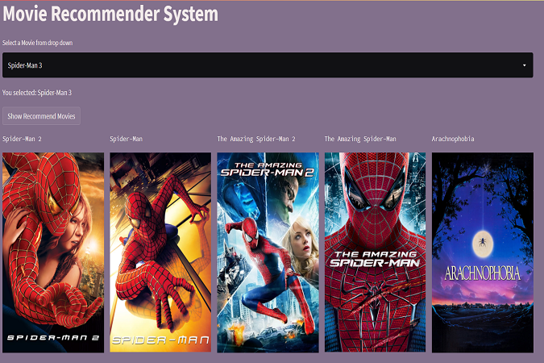

Sentiment analysis is the process of determining the opinion, reviews or feeling expressed as either positive, negative or neutral.
Capturing the exact sentiment of a review through text is a challenging task.
In this project I explored various techniques to extract the sentiment of each review.

unsure what movie to watch next? This free movie recommendation engine suggests a movie based on your selected movie.
Select a movie from drop down and this recommender will suggest 5 movies that you can enjoy based on your selection
This is a virtual internship program with KMPG where I was able to work on client data, client looking to grow business by optiizing marketing stategy.
Analysing business data sets, improving data quality and suggesting recommendations to ensure quality of future data.
Creating customer segments based on RFM analysis, behaviour trends and patterns.
Creating visualizations and dashboards in tableau to derive insights from existing and new customers.

In this project, I performed an unsupervised clustering for Customer Segmentation.
I have finalized 4 clusters for the given dataset based on K-Means Clustering. Generated characteristics of each cluster such as demographic, purchasing habits and behavior.
Customer segmentation is the process of dividing customers into groups based on common characteristics.
Segmentation allows marketers to better tailor their marketing efforts to various audience subsets.